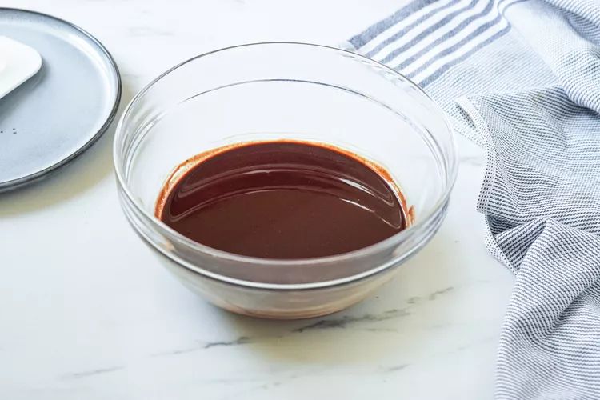
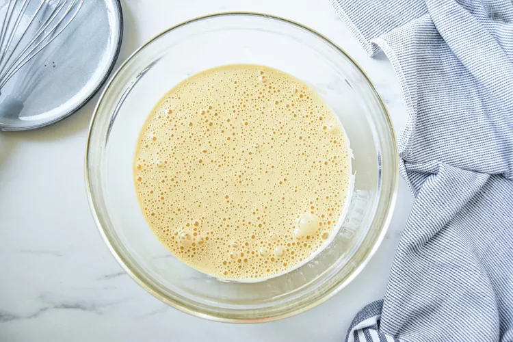
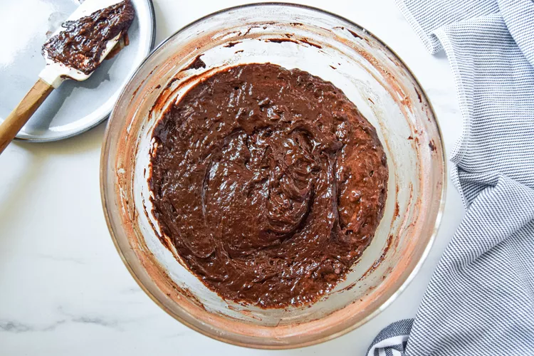
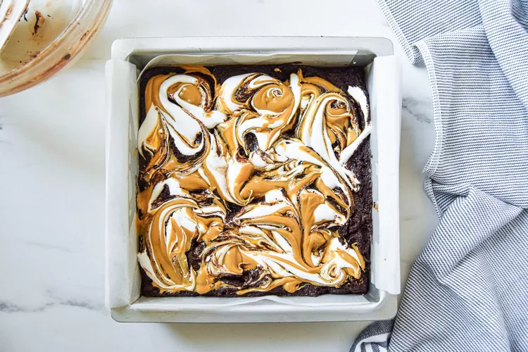
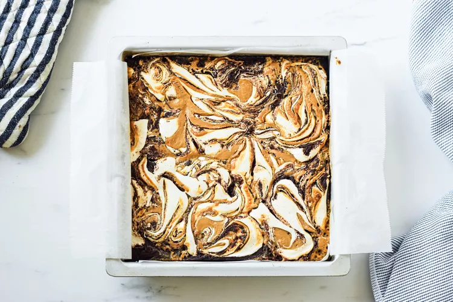
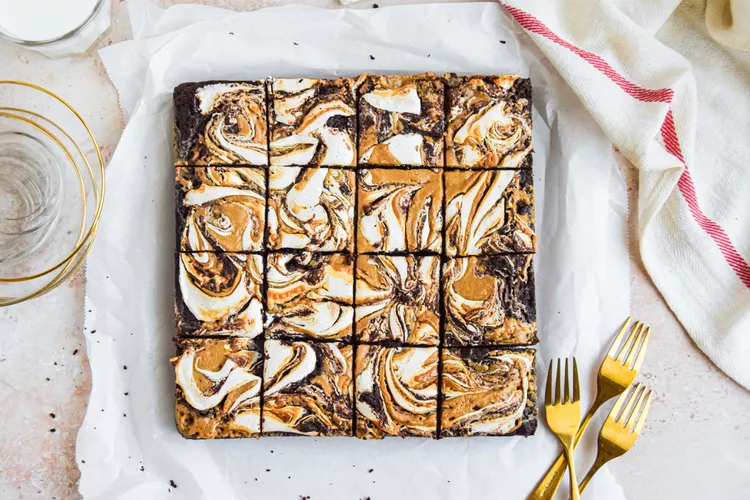

These fluffernutter brownies have a reputation that goes back over a decade. When I was a kid, my school had an annual charity festival that included bake sales, music, games, and all sorts of fun activities put on by the students. Every year, I contributed to the bake sale. Fluffernutter brownies were always the first item to sell out, and they became my signature recipe. I have been making them ever since.
As a kid, I absolutely loved a toasted fluffernutter sandwich, and my obsession with a classic indulgent chocolate brownie goes way back. This recipe pairs a bittersweet chocolate brownie with salty, nutty peanut butter and sweet and chewy marshmallow fluff. The flavors and textures of fluffernutter brownies are satisfying in every single bite.
My fluffernutter brownies take less than an hour to make start to finish, making them an easy sweet treat to bake during the week. But be warned: you need real patience to let them cool down completely before slicing—otherwise, you won’t get neat, clean cuts.
This is a decadent chocolate brownie recipe that uses melted chocolate and cocoa powder to enhance that flavor. Instead of making it from scratch, you can use a boxed brownie mix as a shortcut. This recipe works well with a fudge brownie or a cake brownie mix, prepared according to the package.
Spray an 8x8-inch square pan with baking spray and line with parchment paper.
In a small microwave-safe bowl, add the butter and chocolate and heat it in the microwave for 20-second intervals, stirring each time, just until melted and smooth. Set aside to cool a bit.
In a mixing bowl, add the eggs, granulated sugar, and brown sugar and beat with a whisk until pale and fluffy, about 4 minutes. Alternatively, you can use an electric beater and meat on medium speed for about 2 minutes.
Add the melted butter and chocolate mixture to the beaten eggs and gently fold together until combined. Sift the flour, cocoa powder, and salt over the chocolate mixture. Fold the dry ingredients into the wet. Be gentle and do not overwork the batter.
Transfer the brownie batter to the lined pan and smooth out the top. Make sure the peanut butter is runny (you can pop it in the microwave for 20 seconds and stir well if it's too stiff). Use a spoon to dollop the peanut butter and marshmallow fluff on top of the brownie batter in equal intervals. Drag a butter knife through the dollops to swirl it around. Do not over-swirl it as you want distinctive peanut butter and marshmallow swirls once baked.
Bake until the top is set and a toothpick inserted into the center comes out with very moist (but not raw liquid) batter attached, 35 to 45 minutes.
Let cool completely before cutting into squares and serving with a glass of milk. Store leftover fluffernutter brownies at room temperature for up to 3 days or in the fridge for up to a week.
